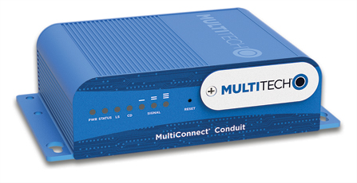

The MultiConnect® Conduit™ is a configurable, scalable cellular communications gateway for industrial IoT applications. Conduit allows users to plug in two MultiConnect mCard™ accessory cards supporting wired or wireless interfaces.

This guide will help you set up the gateway to communicate over The Things Network.
Prerequisites
-
MultiTech Conduit AEP or mLinux model.
Update the Conduit to 5.30 firmware or later to use LoRa Basics Station, which supports channel plan configuration from the Network Server.
-
MultiTech MTAC-LoRa LoRa accessory card, installed as instructed.
Do not forget to mount the antenna to the mCard after fitting it in the conduit.
-
Computer with USB port and terminal software. Mac OS and Linux come with terminal software. For Windows you can use something like Putty.
-
For the mLinux version you’ll need a USB stick.